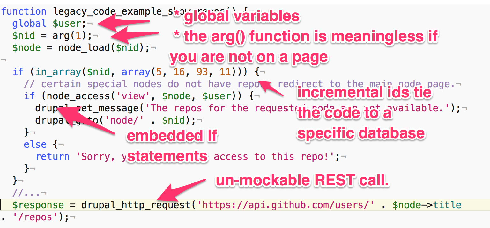

Dcycle
Modifying legacy code the right way
(hint: do not add if statements)
by Albert Albala
@alberto56 - Dcycle.com
https://alberto56.github.io/presentation_legacy_code
Introductions
- Developers?
- Project managers?
- Themers?
"Can we add a light fixture here?"
"Sorry, no."
"Best practices"
- Automated tests
- Continuous integration server
- Known good starting point (do not clone the database)
- Small pure function that do one thing
- DevOps (Docker, Vagrant)
- Mock objects and dependency injection
"Can we limit our lists to five items and display a message if there are more than five items?"
"Sure (should take about 1 story point)."
Rule #1 of modifying legacy code.
Don't do it.
Defining legacy code.
"I could never succeed in intelligibly [defining it]. But I know it when I see it".
—Potter Stewart
"Code with no test coverage is legacy code."
OK, automated tests; what about the other "best practices"?
- Continuous integration server
- Known good starting point (do not clone the database)
- Small pure function that do one thing
- DevOps (Docker, Vagrant)
- Mock objects and dependency injection
Sample legacy code
https://github.com/alberto56/legacy_code_example
What's wrong with this code?
That's what's wrong.
Rule #2 of modifying legacy code.
Move legacy code to class methods (still, don't touch it).
Rule #3 of modifying legacy code.
Surgically add or extract functionality from monster methods.
Rule #4 of modifying legacy code.
Immediately add unit tests and continuous integration to new code.
Add functional tests (Simpletest, Behat) only if necessary.
A word on refactoring.
First, make your code modern and tested and CI-monitored.
Only then, refactor.

Selling this to management:
- Wait for a catastrophe (data loss, security breach...).
- Do it covertly (do not tell management).
- Make them think it's their idea.
- Tack best practices onto existing workflows, don't replace them.
If you are management:
- Request a visible continuous integration dashboard with metrics as artefacts.
- Give your developers time and resources to think about best practices.
Modifying legacy code the right way
(hint: do not add if statements)
by Albert Albala
@alberto56 - Dcycle.com
https://alberto56.github.io/presentation_legacy_code